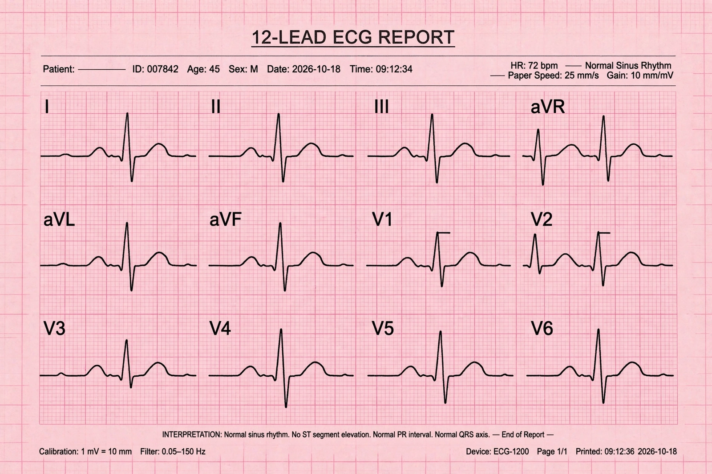

| Electrocardiography | |
|---|---|
 | |
| Abbreviation | ECG / EKG |
| Measures | Electrical activity of the heart |
| Standard form | 12-lead ECG, 10 electrodes |
| Pioneer | Willem Einthoven (Nobel Prize 1924) |
Electrocardiography is the process of producing an electrocardiogram (ECG or EKG), a recording of the heart's electrical activity through repeated cardiac cycles. Electrodes placed on the skin detect the tiny voltage changes produced as the cardiac muscle depolarises and repolarises with each heartbeat; the trace is the most common cardiac test in medicine and an essential tool for diagnosing arrhythmias, heart attacks and structural heart disease.
A normal beat shows a small P wave (atrial depolarisation), a sharp QRS complex (ventricular depolarisation), and a rounded T wave (ventricular repolarisation). Intervals and segments — PR, QT, ST — carry diagnostic meaning: ST-segment elevation is a hallmark of acute myocardial infarction. The standard 12-lead ECG views the heart from twelve angles using ten electrodes on the limbs and chest.
Willem Einthoven's string galvanometer (1903) made clinical ECG practical; he also devised the lead system and wave naming convention still used, winning the 1924 Nobel Prize. Beyond diagnosis, ECGs are used in preoperative assessment, continuous monitoring in intensive care and ambulances, exercise stress testing, Holter monitoring, and increasingly in wearable devices that detect atrial fibrillation. Automated interpretation is built into defibrillators and monitors.